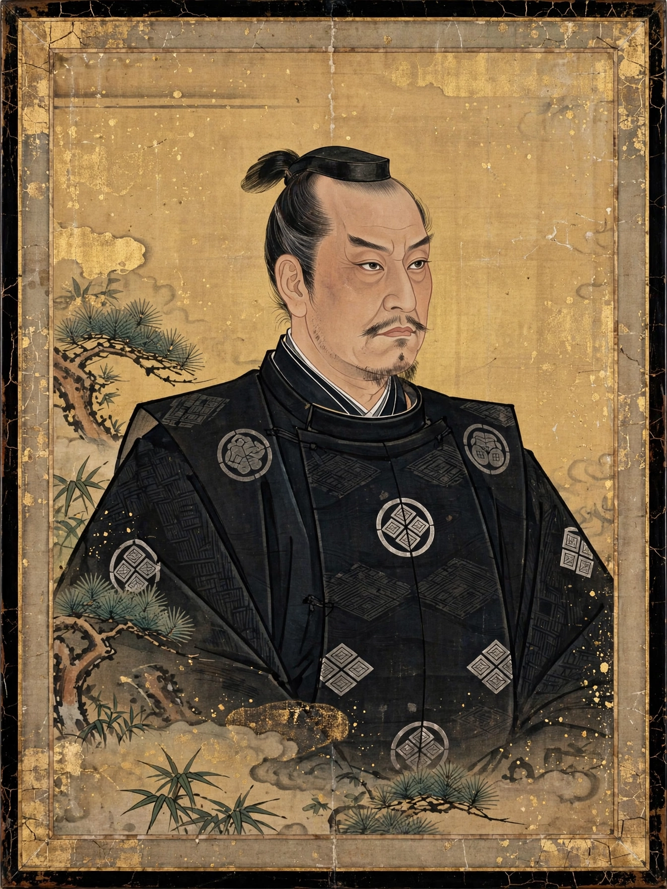

Ashikaga Yoshiaki
| Ashikaga Yoshiaki | |
|---|---|
 | |
| Shōgun | 1568–1573 (de facto); title held until 1588 |
| Born | 5 December 1537 |
| Died | 9 October 1597 (aged 59) |
| Clan | Ashikaga |
| Father | Ashikaga Yoshiharu |
| Predecessor | Ashikaga Yoshihide |
Ashikaga Yoshiaki (足利 義昭, 5 December 1537 – 9 October 1597) was the 15th and final shōgun of the Ashikaga shogunate in Japan. Installed in power by Oda Nobunaga in 1568, he was expelled from Kyoto by Nobunaga in 1573, an event that marks the end of the Muromachi shogunate, although he retained the title of shōgun in exile until 1588.
Early life
Yoshiaki was the second son of the 12th shōgun, Ashikaga Yoshiharu, and entered the Buddhist priesthood at Kōfuku-ji in Nara, taking the name Kakukei. When his brother, the 13th shōgun Yoshiteru, was assassinated in 1565 and a puppet cousin, Yoshihide, was installed, Yoshiaki escaped the temple, renounced his vows, and sought a warlord patron to champion his claim.
Shōgun under Nobunaga
In 1568 Oda Nobunaga marched on Kyoto and installed Yoshiaki as shōgun. Nobunaga soon restricted his authority with written regulations, and Yoshiaki responded by secretly appealing to rival daimyō — Takeda Shingen, Uesugi Kenshin, Mōri Terumoto and others — to form an anti-Nobunaga coalition, and by granting honours to Nobunaga's enemies. In 1573 Yoshiaki openly rebelled; Nobunaga burned parts of Kyoto, deposed him, and drove him from the capital.
Exile and later life
From exile in the west, protected by the Mōri clan, Yoshiaki continued to style himself shōgun and intrigue against Nobunaga and later Toyotomi Hideyoshi. After submitting, he formally resigned the shogunate in 1588, became a Buddhist monk under the name Shōzan, and died in 1597. His long exile is sometimes called the "exiled shogunate" (kubō government in exile), and some historians date the Ashikaga shogunate's end to 1588 rather than 1573.
See also
This article is a recreation written from memory for the muse-webcrawl project.